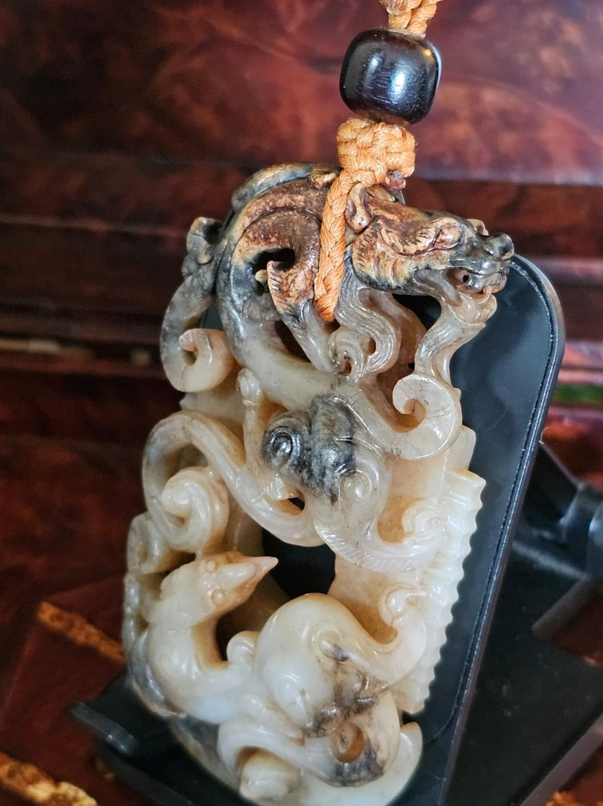
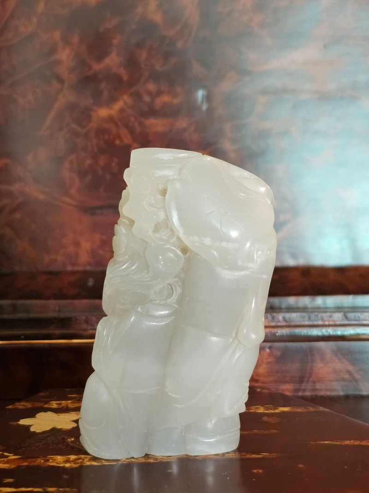
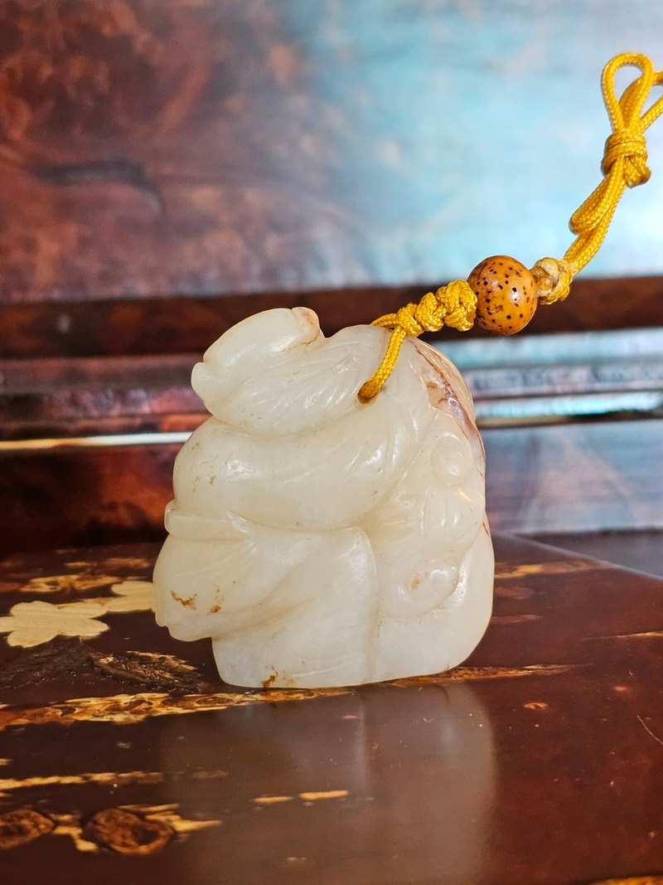

珍稀沁色與質地
此藏品之珍貴在於其獨特的「牛毛滲」沁色。這種沁色細如牛毛、分布自然，是古玉長期受地氣影響形成的自然特徵，極難偽造。在擁有深厚沁色的同時，白玉本體依然保持高度的溫潤與透白，這種「沁不毀玉」的極佳品相，在唐代高古玉中實屬罕見。
此件白玉重器質地透白溫潤，駿馬體態豐滿健碩。最為難得的是馬身遍佈細密自然的「牛毛滲」，狀如絲髮，與潔白玉質相映成趣。馬背上的靈猴雕琢異常精乖生動，回首顧盼間充滿靈氣。
背部線條洗鍊大氣，展現唐代工匠極高的手藝。牛毛滲隨玉理自然分佈，層次豐富，包漿厚實。玉面雖經千年，依然保持極佳的通透感與溫潤光澤，品相保存極其完美。
此藏品之珍貴在於其獨特的「牛毛滲」沁色。這種沁色細如牛毛、分布自然，是古玉長期受地氣影響形成的自然特徵，極難偽造。在擁有深厚沁色的同時，白玉本體依然保持高度的溫潤與透白，這種「沁不毀玉」的極佳品相，在唐代高古玉中實屬罕見。
雕琢工藝展現了昔年工匠的神乎其技。馬匹的雄渾與靈猴的精乖形成鮮明對比。靈猴的五官、神態刻畫得細緻入微，動作矯健活潑，彷彿躍然玉上。這種將重器之美與靈動神韻結合的表現力，非一般工匠所能企及。
The value of this piece lies in its ox-hair staining: hair-fine, naturally distributed, and exceptionally difficult to imitate. Crucially, the white jade beneath remains warm and translucent — the 'stain that does not spoil the jade' condition collectors prize in Tang-era material.
The contrast between the horse's mass and the monkey's alertness is the whole drama of the piece. The monkey's features are cut with a lively precision that makes it seem about to move — an expressive control beyond most hands.
寓意 「馬上封侯」。藉由駿馬與靈猴的組合，寓意「功名即至、官運亨通、步步高升」。在唐代盛世，這類題材不僅是祈求仕途順遂，更是身份與品味的象徵。
用途 重達 336g 的份量感，使其具備極強的鎮宅氣場。適合作為收藏家的大手把件研磨，或作為書房中展現大唐遺風的頂級案頭陳設。
The rebus 馬上封侯 ('a monkey on horseback') sounds like 'may you at once be ennobled' — a wish for swift promotion, office and advancement. In the Tang world such subjects signalled both aspiration and social standing.
Its 336 g of stone give it real presence as a guardian object. Suited to a collector's hand, or to a scholar's desk as a piece of Tang grandeur.
品相 此件唐代重器品相保存極佳，玉質透白、沁色奇特、工藝精絕。天然的牛毛滲與厚實的包漿交織，展現出古玉收藏中夢寐以求的熟舊美感。
承諾 本人曾從事珠寶行業，保證描述真實、專業。誠摯歡迎預約親自鑑賞，感受這件「牛毛滲」白玉重器的靈性與匠心。
Condition Preserved in exceptional condition: translucent white jade, unusual staining, and superb carving. Natural staining and thick patina interweave to give the 'ripe and old' beauty collectors seek.
Guarantee I spent my career in the jewellery trade and guarantee that every description is true and professional. You are sincerely welcome to arrange a private viewing.


